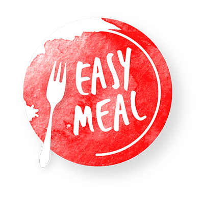

Information

EasyMeal is the mobile application that can offer you location where you can eat, just by the click
on the search bar and writing the name of your favorite food.
If you are a restaurant, hotel or any
kind of
public venue that offers food and wants to be a part of EasyMeal family , you can contact us on the
mail:
easymeal@gmail.com in order to start a collaboration.
You are welcome to send us your new daily
menus every
day or any time you want your menu to be changed
in EasyMeal.